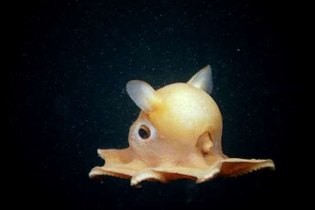

Twilight Zone


The Twighlight Zone is largely unexplored, a layer of water that stretches across the globe. It lies 200 - 1,000 metres below the ocean’s surface. There are many strange and unusual creatres that have been discovered. The images above display from right to left: Lanternfish, HatchetFish and Vampire Squid. across the globe. It is 200 - 1,000 metres below the ocean’s surface. There are many strange and unusual creatures that have been discovered.
Midnight Zone


The Midnight Zone is a layer of the ocean extending from 1,000 - 4,000 metres below the ocean’s surface. Characterised by darkness, ice cold temperatures and immense pressure, many creatures living in this zone of the ocean had adapted by having jelly-like bodies and softer bones. It is the largest habitat on Earth. The creatures shown above are from left to right: Anglerfish, Gulper Eel, Giant Squid.
The Abyss



The Abyss is a even lower than the Midnight Zone spanning 3,000 to 6,000 metres below the surface. With freezing temperatures and limited food resources, many creatures that reside here are wierd and wonderful. The images above display from right to left: Dumbo Octupus, Tripod Fish, Sea Cucumber.
The Trenches


The Trenches is from around 6,000 to 10,000 metres. Predominantly found in the Pacific Ocean as part of the "Ring of Fire," including the Mariana Trench, Tonga Trench, and Puerto Rico Trench. The images above display from right to left: Mariana Snailfish, Amphipod, Fangtooth.